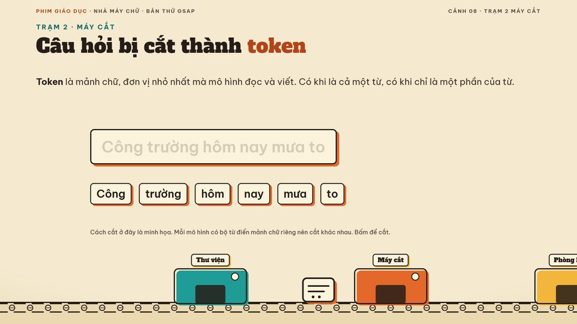
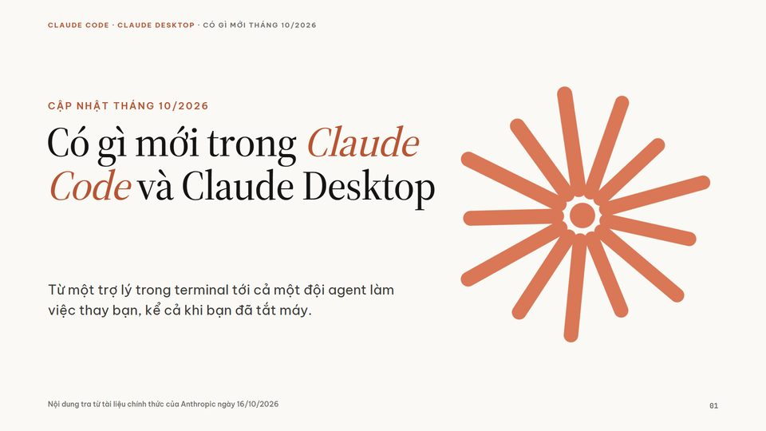
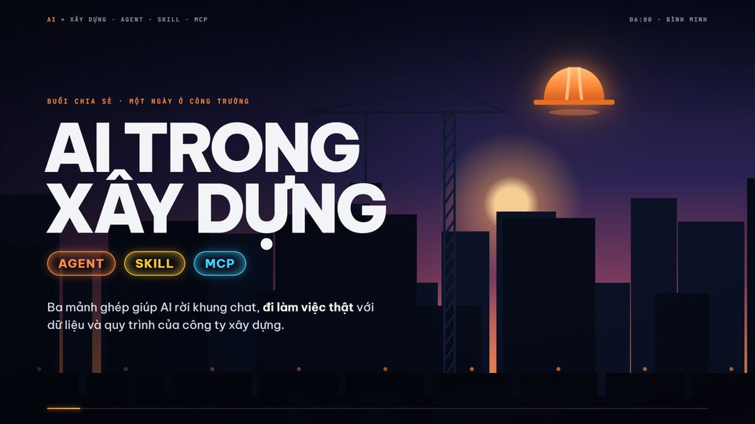
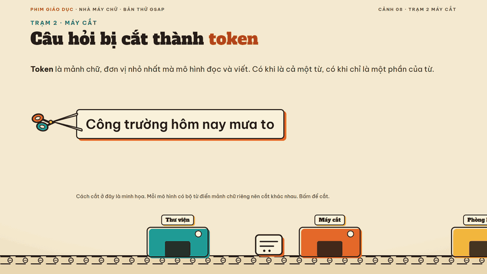
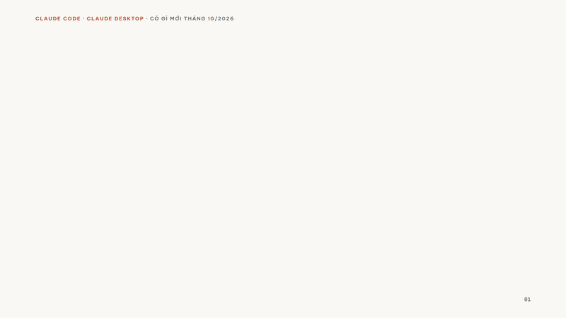
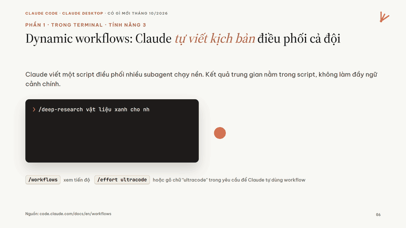

Vì sao có SlideMotion
Khung cứng làm AI rập khuôn.
Mô hình bây giờ đủ giỏi để tự thiết kế. Ép nó điền nội dung vào khuôn thì deck nào cũng một dáng. Thứ nó cần là gu, không phải khuôn.
Cách cũ: lắp ghép khung
- Tiêu đề trái, gạch đầu dòng, ô nhấn phải, lặp lại cả bài
- Hiệu ứng để trang trí, mọi thứ cùng trượt lên
- Đổi chủ đề mà nhìn vẫn như nhau
SlideMotion: AI làm đạo diễn



- Mỗi deck một ý tưởng lớn: một thế giới, một nhân vật đi suốt bài
- Hình ẩn dụ lấy từ chính chủ đề, vẽ bằng SVG
- Chuyển động theo động từ của câu: "cắt" thì cắt, "gom" thì gom
Deck mẫu
Bấm vào, bấm Space để xem.
Mỗi deck là một file HTML. Mũi tên hoặc Space để chuyển, F toàn màn hình, Ctrl+P ra bản phát tay.

Nhà máy chữ
Bên trong một chatbot, phim giáo dục thập niên 50. Kéo cắt câu thành token, đường chú ý tự vẽ.
Mở deck ↗
Có gì mới trong Claude Code
19 slide style Claude Ivory. Ngôi sao mọc thêm một cánh sau mỗi tính năng.
Mở deck ↗
Sơ đồ tự vẽ theo lời giảng
Mỗi cú bấm chạy một đoạn dòng thời gian GSAP; bấm lùi thì tua ngược.
Mở deck ↗Cách làm
Sáu bước, AI tự đi hết.
Chọn chế độ
Giảng dạy, báo cáo hay sự kiện. Mỗi chế độ một nhịp riêng.
Ý tưởng lớn
Một thế giới, một trục, một nhân vật đi suốt bài.
Chọn style
Gợi ý ba style từ 86 thẻ: một hợp, một khác nền, một bất ngờ.
Kịch bản đạo diễn
Mỗi slide một ý, một hình ẩn dụ, một động từ chuyển động.
Dựng bằng GSAP
Mỗi slide một dòng thời gian; mỗi cú bấm chạy một đoạn.
Tự soát
Chụp từng khung hình, sửa chữ đè, kiểm nguồn số liệu rồi mới giao.
Giảng dạy
Hiểu và nhớ: câu chuyện xuyên suốt, bấm từng bước, có bản phát tay để học viên giữ.
- 01Định nghĩa, ví von, ví dụ theo nhịp
- 02Câu hỏi kiểm tra giữa bài
- 03Slide tóm tắt, Ctrl+P ra PDF phát tay
Báo cáo
Rõ và nhanh: kết luận trước, số liệu có nguồn, hiệu ứng nhẹ.
- 01Nguồn ghi cạnh từng con số
- 02Một biểu đồ, một thông điệp
- 03Ưu tiên sửa được
Sự kiện
Ấn tượng: ý tưởng điện ảnh, toàn cảnh lia, khoảnh khắc lớn cho bìa và kết.
- 01Chuyển cảnh mở vòng tròn, lao xuyên, chớp
- 02Chữ tách ký tự, giải mã, bật lò xo
- 03Máy quay lia qua nhiều lớp nền
Thư viện style
86 style, mỗi thẻ là cảm hứng.
Mỗi thẻ ghi bảng màu, phông chữ, ngôn ngữ minh họa và chữ ký chuyển động. Bố cục từng slide vẫn do AI tự nghĩ.
Cài đặt
Một lệnh, rồi cứ nói.
Skill là một thư mục. Cài nghĩa là chép thư mục đó vào chỗ Claude Code tìm skill. Cần có Claude Code và Git.
Tải skill về máy
Mở phiên Claude Code mới và nói
Claude hỏi chế độ, gợi ý ba style, viết kịch bản đạo diễn rồi dựng. Không nhớ lệnh cũng được: nói "làm slide có chuyển động" là đủ.
Trình chiếu
Mở file HTML bằng Chrome hoặc Edge. Mũi tên hoặc Space để chuyển, F toàn màn hình, Ctrl+P ra bản phát tay PDF.